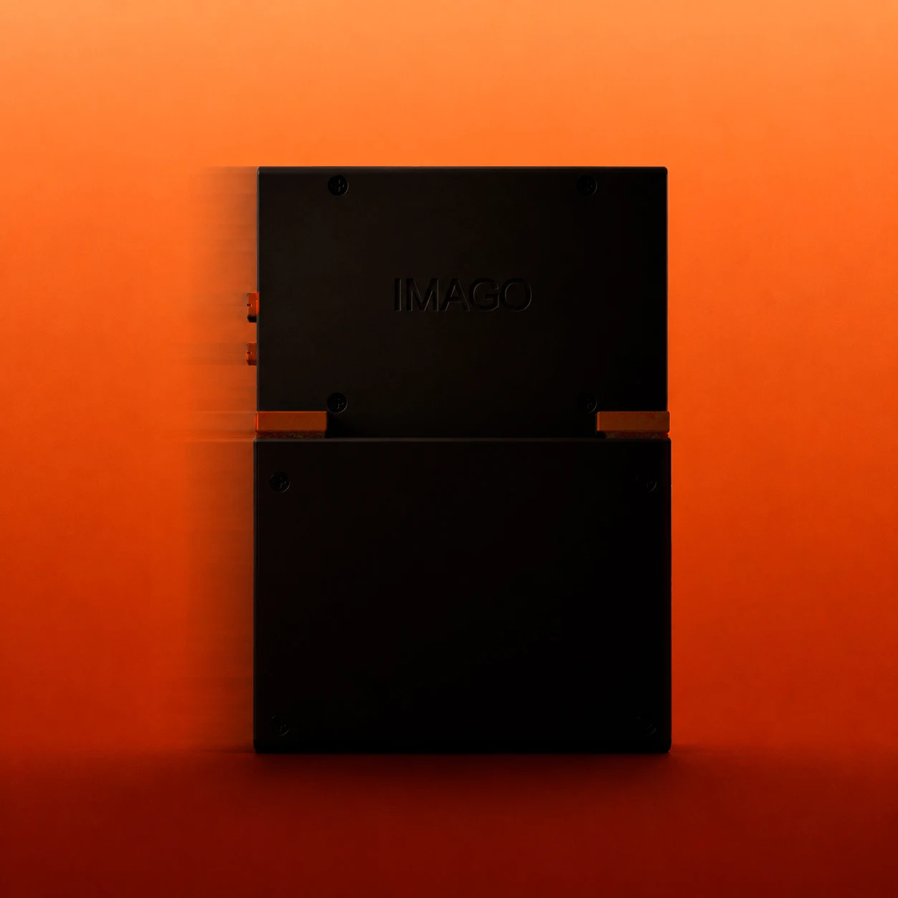
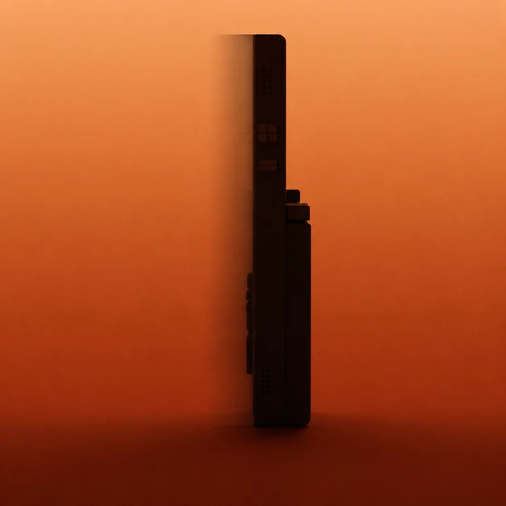
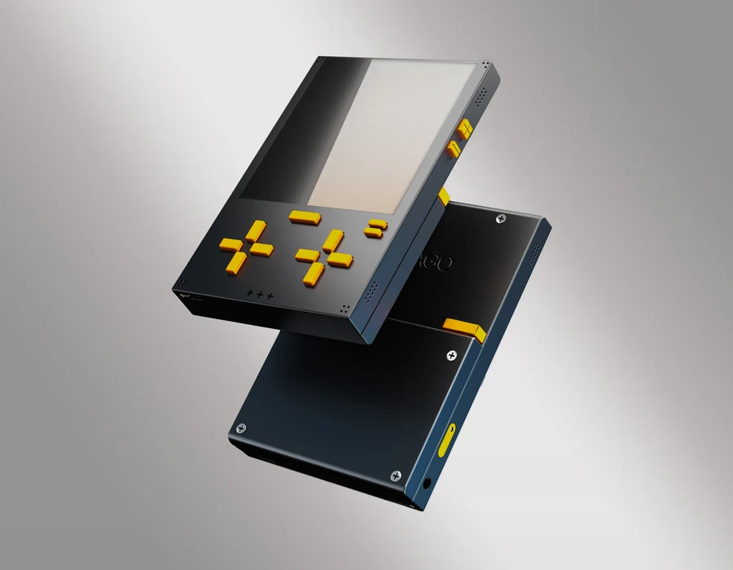
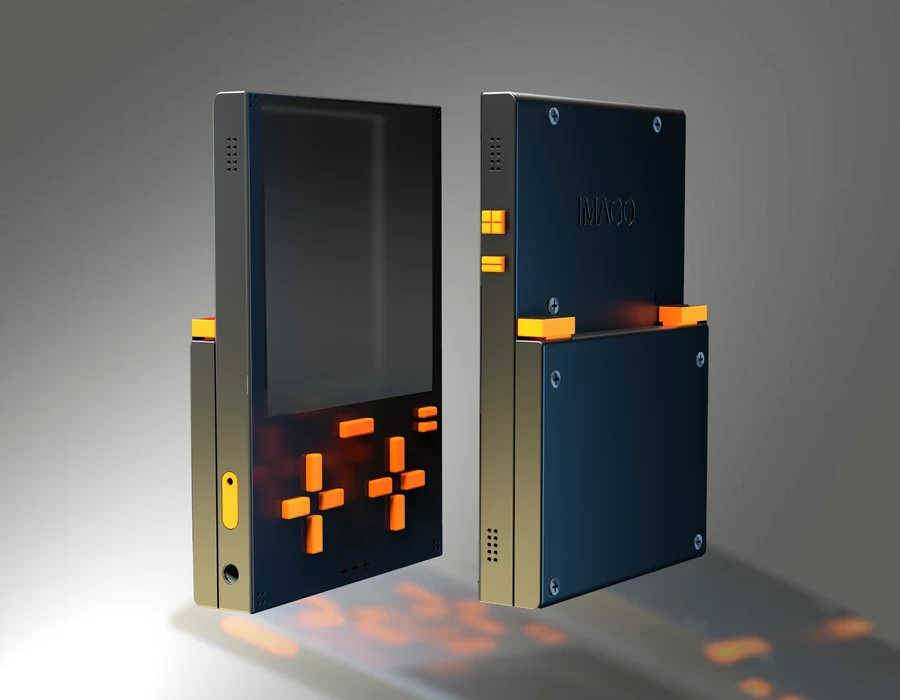

Diseño de producto
IMAGO
Una consola portátil de tinta electrónica a color que plantea otra relación con el juego. Su concepto se apoya en sesiones sin mecanismos de permanencia, una interfaz sencilla y una construcción reparable.
La propuesta combina carcasa de aluminio anodizado, piezas internas de PETG y teclas de TPU. El formato cuadrado permite alternar entre juego y lectura; los controles físicos y el montaje con tornillos forman parte del enfoque de reparación.








